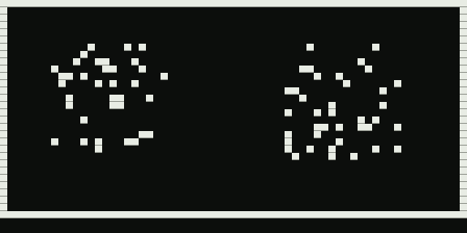
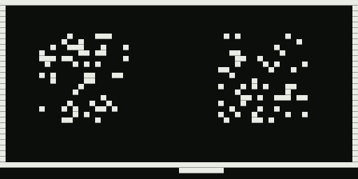
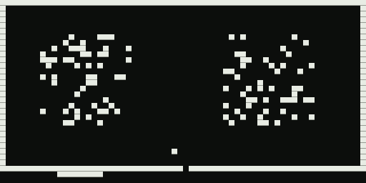

Bounce
Graeme V. Samways · DREAMER no. 1 (1980-09) p. 4 1K RAM



A breakout-style game with a bat along the bottom line and two blocks of random dots above it. You have 20 balls, and every bounce on the bottom line wipes out one dot of it. The score is the number of dots removed.
Keys
Hold C/D to move the bat left fast/slow, E/F right slow/fast; any key serves the ball.
Files
| File | Version | Load | Run |
|---|---|---|---|
| Bounce.d68 | main | 0090-00AF, 0200-02FF | C000 |
Listing as transcribed (with notes): bounce.txt
Source
DREAMER no. 1 on archive.org, p. 4 (PDF page 4). Author: Graeme V. Samways.
Corrections applied
None.
Open doubts
None.